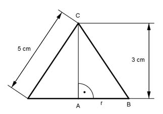

Aufgabe 209 Der Achsenschnitt eines Kegels ist ein gleich- schenkliges Dreieck mit einer Höhe h von 3 cm und der Länge l eines Schenkels von 5 cm. Wie groß sind das Volumen V und die Mantelfläche M des Kegels?

Satz von Pythagoras im Dreieck ABC: 52 cm2 = r2 + 32 cm2 |-32cm2 r2 = 25 cm2 - 9 cm2 = 16 cm2 |√ r = 4 cm л * r2 * h V = ------------- = 3 л * 42 cm2 * 3 cm = --------------------- = 50,2 cm3 3 M = л * r * s = л * 4 cm * 5 cm = 62,8 cm2